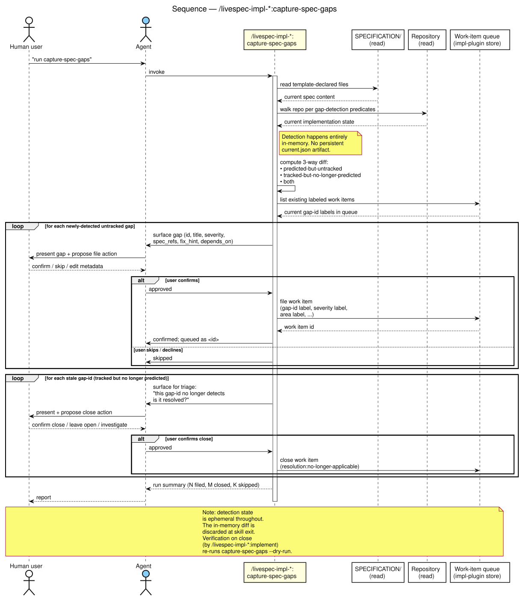
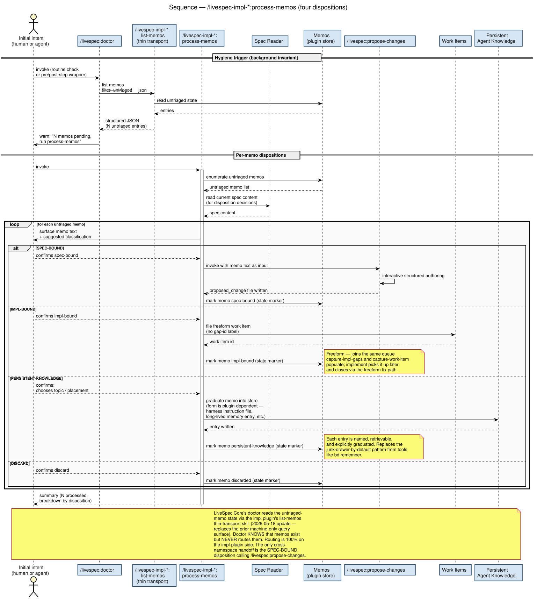

This document captures findings from an extended brainstorming session that re-examined the LiveSpec architecture from first principles after the existing implementation pattern (beads-backed with a hybrid JSON/database state) started showing seams. The session shifted multiple load-bearing assumptions and produced a substantially different shape for the API surface and plugin distribution model. The verbatim transcript is preserved as a companion HTML file at 2026-05-11-conversation-transcript.html.
livespec plugin becomes livespec-core. Implementation plugins use the pattern livespec-impl-<X> where X is the tracking mechanism (not substrate). Catalog: livespec-impl-plaintext, livespec-impl-beads, livespec-impl-gascity (renamed from "gastown"), livespec-impl-kilroy, livespec-impl-gitlab, etc.
livespec-impl-plaintext consolidates formats. One plugin handles md / html / jsonl / yaml backends. Format choice lives in .livespec.jsonc. Format migration is a free bonus capability (one plugin owns readers and writers for all formats).
.livespec.jsonc as shared cross-plugin config with per-plugin section ownership. Root is additionalProperties: true. livespec-core owns core keys; each impl plugin owns a top-level key named for the plugin. Secrets MUST NOT live here.
livespec-impl-plaintext going forward; livespec-impl-beads remains a first-class implementation for adopters with concurrent multi-contributor profiles.
.ai/<topic>.md), or discard. The doctor enforces this via a hygiene invariant.
capture-spec-gaps collapses refresh-gaps + plan. Detection is ephemeral (in-memory). The persistent current.json intermediate artifact disappears entirely. Per-gap consent dialogue happens inside the unified skill.
propose-changes is the renamed singular propose-change. Plural form acknowledges existing 1-to-N reality (one file can already carry multiple ## Proposal sections). Singular name was misleading.
critique survives as a separate skill. Its role refined: surface observations based on observing the specification (spec-internal issues: ambiguity, contradiction, undefined terms, dangling references). NOT observation of the implementation — that's a different operation entirely. Its 1-to-N cardinality and no-user-intent posture justify keeping it separate from propose-changes.
The plugins are distributed as separate GitHub repos, each registering as a Claude Code marketplace plugin. Consumer projects install livespec-core plus exactly one livespec-impl-* plugin via the standard marketplace flow.
The marketplace.json schema does support multiple plugins from a single repo's subdirectories (we verified this via the Claude Code docs), but the multi-repo decision was driven by:
The cost paid is the shared-content sync mechanism. NFR sections (TDD workflow, code style, CI conventions, lint rules, Python pins, lefthook setup) genuinely live in multiple plugins. The sync mechanism is open (subtree / pinned package / generator / etc.); the existence of shared content survives the decision.

LiveSpec Core publishes a documented contract in SPECIFICATION/contracts.md that implementation plugins must honor. The contract has four sections:
.livespec.jsonc shape and per-plugin section ownership./livespec:* command's signature.livespec-impl-* MUST expose to be considered LiveSpec-compatible.
| Command | Purpose |
|---|---|
/livespec:seed | Initialize a new spec tree |
/livespec:propose-changes | Author one or more proposed changes (plural rename of today's propose-change) |
/livespec:critique | Surface observations based on observing the spec; spec-internal analysis only |
/livespec:revise | Process pending proposed-changes; cut new history/vNNN |
/livespec:doctor | Spec invariants (static + LLM-driven) + memo-hygiene invariant via impl plugin query |
/livespec:prune-history | Bound history size; collapse oldest vNNN entries |
/livespec:help | Overview + routing |


/livespec:revise with pre-step + post-step doctor static, selective per-proposal acceptance, and post-step LLM-driven phase.Every livespec-impl-* plugin MUST expose these five skills under its own namespace prefix:
| Command | Purpose |
|---|---|
/livespec-impl-*:capture-spec-gaps | Detect implementation gaps; file labeled/categorized work items in the plugin's backend (per-gap user consent) |
/livespec-impl-*:implement | Drive Red→Green for a single work item; verify via capture-spec-gaps --dry-run; close work item |
/livespec-impl-*:capture-memo | Capture a free-text memo to impl-side storage |
/livespec-impl-*:list-memos | List/search memos; --untriaged --json exposes inventory for doctor's hygiene query |
/livespec-impl-*:process-memos | Per-memo handholding dialogue: spec-bound / impl-bound / persistent-knowledge / discard |
Cross-namespace handoff: the only place an impl plugin reaches "up" into core is process-memos calling /livespec:propose-changes for the spec-bound disposition. Otherwise the plugins are independent.

capture-spec-gaps collapses today's refresh-gaps + plan pair. implement is generic — handles any work item (spec-gap-derived, memo-derived, or future direct-filed).
/livespec-impl-*:capture-spec-gaps with in-memory detection, per-gap consent dialogue, and stale-label triage.The most significant conceptual move in this session: memory is transient by construction in LiveSpec, not a persistent store as in beads.
Beads' bd remember is a permanent memory-bank read by LLM harness instructions — entries accumulate indefinitely. LiveSpec rejects this: it's the junk-drawer anti-pattern. The LiveSpec invariant is everything must be spec or implementation; memos are in-flight state that must resolve to one of them (or to a third structured artifact: .ai/<topic>.md) or be discarded.
The four process-memos dispositions encode this philosophy:
| Disposition | Action | Notes |
|---|---|---|
| spec-bound | Calls /livespec:propose-changes with the memo text as input |
The cross-namespace handoff to livespec-core; produces a proposed-change file that revise eventually consumes |
| impl-bound | Files a work item in the impl plugin's queue (no gap-id label) |
Joins the same queue capture-spec-gaps populates; implement picks it up |
| persistent-knowledge | Writes .ai/<topic>.md + updates AGENTS.md (optionally CLAUDE.md) with a progressive-load reference |
For genuinely persistent agent knowledge that doesn't fit spec or implementation. Named, scoped, progressively loaded. |
| discard | Delete the memo from the store | The terminal disposition — closes the entry without producing a follow-on artifact |
The .ai/<topic>.md convention is the load-bearing replacement for beads-style memory-as-store. Each file has a focused subject (.ai/beads-quirks.md, .ai/python-style-tricks.md) and is referenced from AGENTS.md with a progressive-load pattern so it doesn't blow up context.


/livespec-impl-*:process-memos showing the four dispositions in action, the doctor hygiene trigger, and the cross-namespace handoff for spec-bound dispositions.Several terminology choices landed during the session:
| Before | After | Reason |
|---|---|---|
livespec (plugin) | livespec-core | Conventional plugin-ecosystem pattern; unambiguous |
| (implicit "git" axis) | livespec-impl-<tracking-mechanism> | Git is the substrate, not the differentiator. Name by tracking mechanism (plaintext / beads / gitlab / etc.) |
propose-change | propose-changes | File format already 1-to-N (multiple ## Proposal: sections); singular name was misleading |
refresh-gaps + plan | capture-spec-gaps | Single skill detects + files atomically; ephemeral in-memory detection state |
remember / memories / review-memories (beads terms) | capture-memo / list-memos / process-memos | Beads' verbs don't translate to gitlab/jira/etc. backends. Generic descriptive verbs work everywhere. |
| "observation" / "staging" | memo (the noun) | "Observation" too narrow; "staging" overloaded with deployment connotation; "memo" is neutral and familiar |
| Gastown | Gascity | Correction — the project is named Gas City |
.livespec.jsonc — shared cross-plugin config
The file is the cross-plugin discovery point. Every plugin reads it; livespec-core reads core keys; each impl plugin reads its own top-level section. Schema is open at the root (additionalProperties: true) so plugins can extend without central coordination.
{
// owned by livespec-core
"template": "livespec",
"spec_root": "SPECIFICATION",
"pre_step_skip_static_checks": false,
// implementation activation
"implementation": {
"plugin": "livespec-impl-plaintext"
},
// each implementation owns a top-level section keyed by its name
"livespec-impl-plaintext": {
"format": "md",
"gaps_path": "implementation-gaps/"
}
// ... or "livespec-impl-beads": { "issue_prefix": "li-" }
// ... or "livespec-impl-gitlab": { "project_id": "...", "labels_prefix": "livespec/" }
}Rules in the published contract:
.livespec.jsonc is git-committed and may only contain non-sensitive configuration.The session included an honest assessment of whether beads earns its keep in livespec specifically. The math came out one-sided:
Where beads paid off: dependency-aware ready queue, status transitions, label vocabulary, search — all real conveniences.
Where beads cost more than it earned:
setup-beads.sh, bd-doctor.sh)dev-tooling/implementation/research/beads-problems.md), three with silent failure modesbd edit footgun (blocks agents; convention-enforced)The features beads provides over plaintext+git that are NOT trivially replicable in plaintext: only the Dolt concurrent-merge story, which livespec doesn't need.
livespec-impl-plaintext (JSONL format) going forward. livespec-impl-beads survives as a first-class implementation for adopters who DO have the concurrency profile (Gas City, etc.). LiveSpec ecosystem supports both; LiveSpec the project picks the one matching its actual usage.
For openbrain (sibling project), the same assessment applies — if its concurrency profile is single-author + branch-parallelism, the same calculus holds. Coordination decision, not a technical one.
A specific refinement worth marking: /livespec:critique's role is to surface observations based on observing the specification.
NOT the implementation. NOT memos. NOT observations from the world. Spec-internal analysis only: ambiguity, contradiction, undefined terms, dangling references, prose quality, NLSpec conformance.
This sharpens the cohesion question that the session worked through. Critique survives as a separate skill (alongside propose-changes) precisely because its input domain is the spec itself — that's structurally different from authoring proposed changes from external intent.
.ai/<topic>.md conventionThe persistent-knowledge disposition lands genuinely-persistent agent knowledge into named, structured files referenced from agent-instruction surfaces.
AGENTS.md (optionally CLAUDE.md) carries a reference like: "For Python style tricks specific to this project, see .ai/python-style-tricks.md." The file only gets pulled into agent context when relevant.The convention is published in livespec-core's contracts.md (so all implementations honor it for the persistent-knowledge disposition), but the files themselves live in the consumer's repo and are written by the impl plugin's process-memos skill.
The elephant. This needs further brainstorming before any spec change lands.
capture-spec-gaps handles one direction of drift: the spec says X; the implementation does not yet reflect X. The detector fires, work items are filed, implement closes them.
The opposite direction has no captured workflow: the implementation is observably correct (through inherent behavior, or because a memo got implemented as code/CI/docs); this surfaces a drift in the specification that says something the implementation no longer matches (or never matched). The spec needs to change via a propose-change.
Previously, the architecture may have hand-waved that /livespec:critique would catch this. But with the refinement that critique observes only the specification, critique cannot reach into the implementation to compare. So there's a hole.
The candidates worth thinking through (NOT discussed in this session; flagged for follow-up):
/livespec:propose-changes directly), but this violates the handholding mandate.This is a real gap. The current capture surface is asymmetric — only one direction of drift is detected and handheld. Closing this gap is a load-bearing follow-up before the API surface can be considered complete.
.livespec.jsonc. Each impl plugin publishes its own JSON Schema fragment; how do these get loaded for validation in practice?research/workflow-processes/
├── CLAUDE.md (unchanged)
├── 2026-05-11-architecture-summary.html (this document)
├── 2026-05-11-conversation-transcript.html (verbatim transcript)
├── diagrams/ (new diagrams)
│ ├── legend.plantuml + legend.svg
│ ├── multi-repo-layout.plantuml + .svg
│ ├── core-vs-impl-api-surface.plantuml + .svg
│ ├── spec-lifecycle.plantuml + .svg
│ ├── implementation-lifecycle.plantuml + .svg
│ ├── memo-lifecycle.plantuml + .svg
│ ├── seq-capture-spec-gaps.plantuml + .svg
│ ├── seq-process-memos.plantuml + .svg
│ └── seq-revise.plantuml + .svg
└── archive/ (superseded content)
├── beads-only-gap-storage.md (superseded — JSON-vs-beads framed as single global; reality is per-impl)
├── spec-vs-implementation-line.md (superseded — the line conversation has progressed past this)
├── workflow-diagrams.md (superseded — diagrams now inlined in summary docs)
└── diagrams/ (old PlantUML sources + the proxy-rendered references)